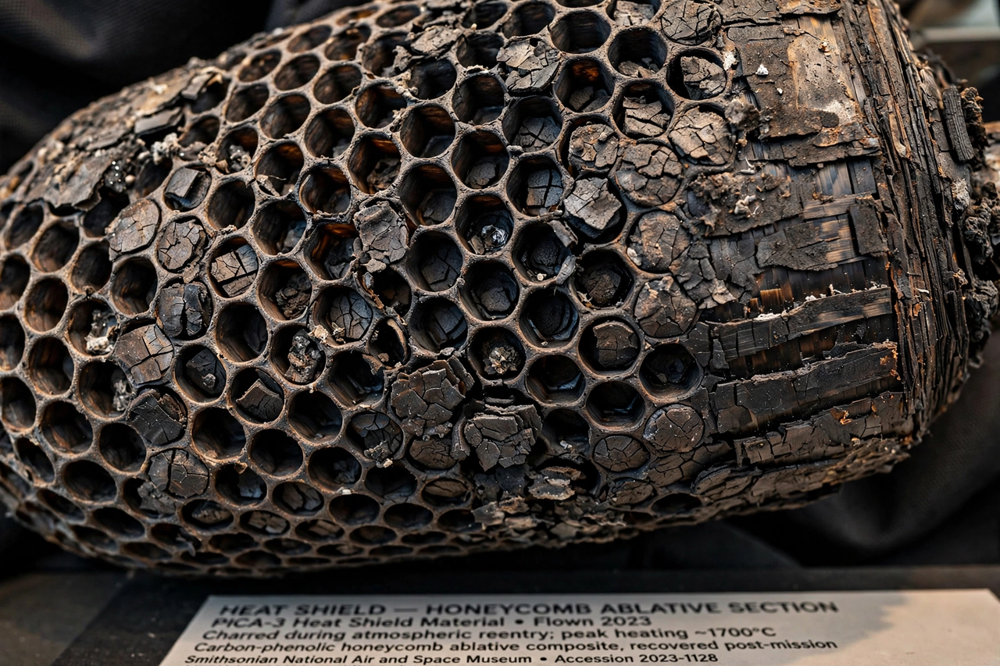

Ablative heat shield
From Wikipedia, the free encyclopedia
| Ablative heat shield | |
|---|---|
| Used on | Apollo, Orion, Stardust, Galileo probe, Dragon |
| Materials | Avcoat, PICA, SLA-561V |
| Principle | Sacrificial charring and ablation |

A flown ablative heat shield.An ablative heat shield protects a spacecraft during atmospheric entry by sacrificing itself: as the surface heats to thousands of degrees, the shield material chars, melts and erodes away, carrying heat with it and insulating the structure beneath. Ablators protected every American crewed capsule from Mercury through Apollo, and the technique remains the choice for the most extreme entries.
Classic ablators include Avcoat — a fibreglass honeycomb filled with epoxy-novolac resin, used on Apollo and in modern form on Orion — and PICA, a lighter carbon-fibre/resin material developed at NASA Ames that shielded Stardust's record-fast return and SpaceX's Dragon capsules.
Extreme cases
The most punishing entry ever survived was the Galileo probe's plunge into Jupiter in 1995, where the carbon-phenolic shield lost a large fraction of its mass and endured heating fiercer than the Sun's surface for seconds. At the other end of the trade, reusable craft like the Space Shuttle chose insulating tiles instead — ablators are mostly single-use, though PICA-X on Dragon is refurbished between flights with modest rework.
See also
Atmospheric entry · Orion (spacecraft) · Stardust (spacecraft) · Galileo probe